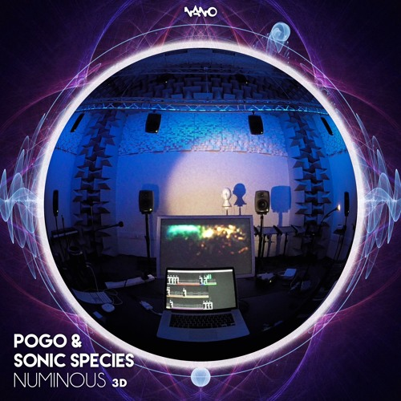

Pogo & Sonic Species - Numinous 3D
5th order Ambisonics · 08:00 · 87.5 MB
5th order ambisonics mix of 'Numinous' by Pogo & Sonic Species. Mixed at the University of Huddersfield SPIRAL studio. Check out the WebVR version at https://numinous3d.com

Pogo & Sonic Species - Numinous 3D, 5th order Ambisonics as APAC over HLS.
These are spatial audio streams for Periphony.
Add the collection to Periphony
Or, to add it by hand, open Periphony's Content Manager, choose Add Collection and give it this address:
https://olilarkin.github.io/streamtest/stream-test_1.0.json
The players below work in Safari, which plays the streams without head tracking or visualizers.
5th order Ambisonics · 08:00 · 87.5 MB
5th order ambisonics mix of 'Numinous' by Pogo & Sonic Species. Mixed at the University of Huddersfield SPIRAL studio. Check out the WebVR version at https://numinous3d.com